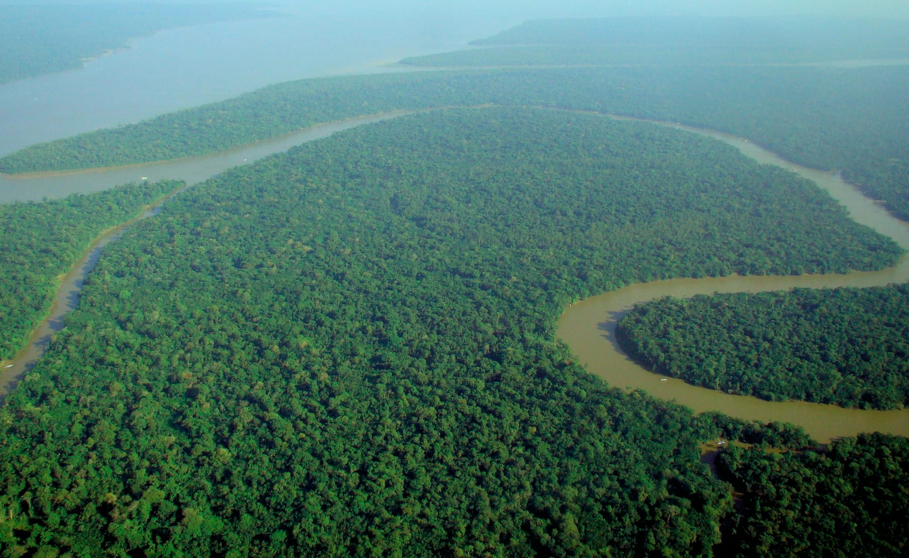
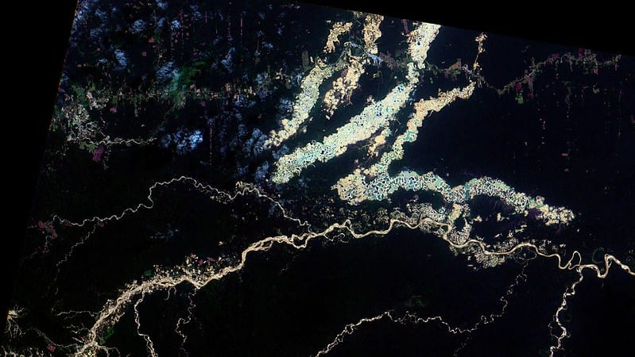
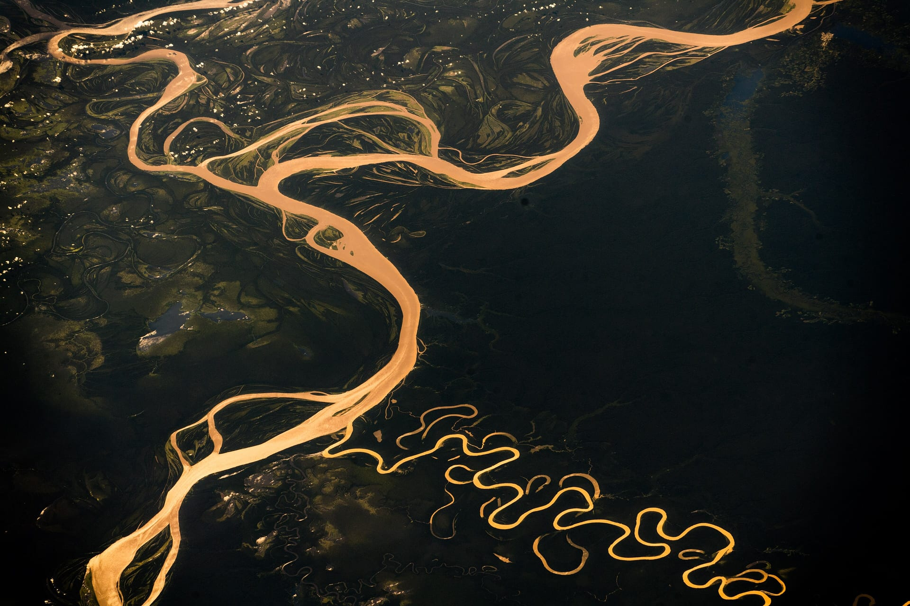
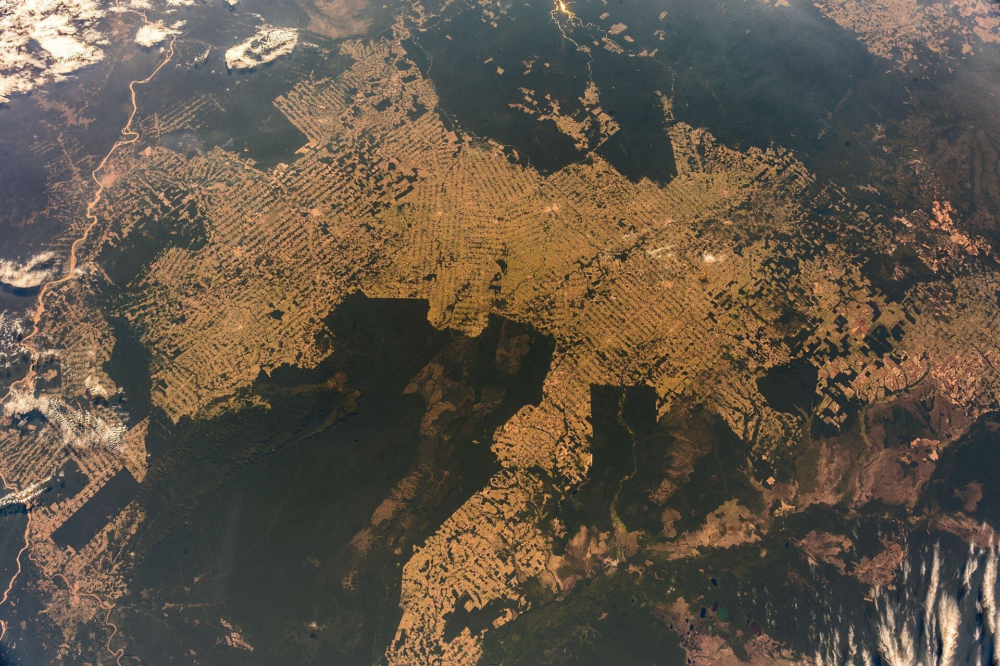
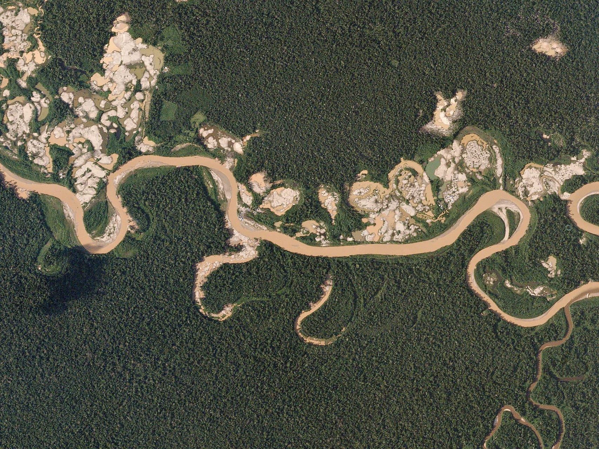
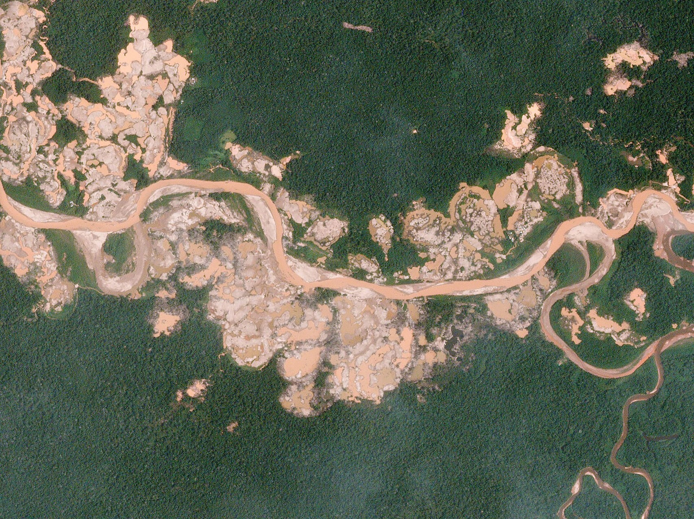
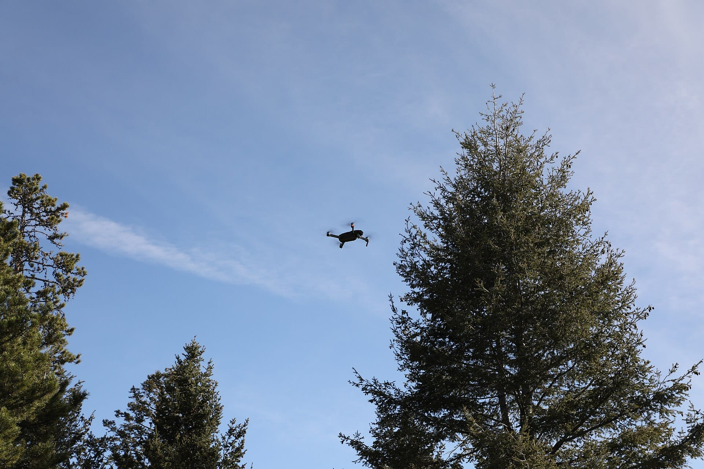
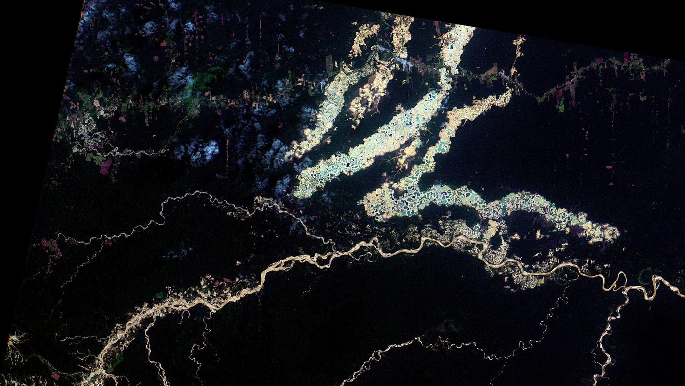
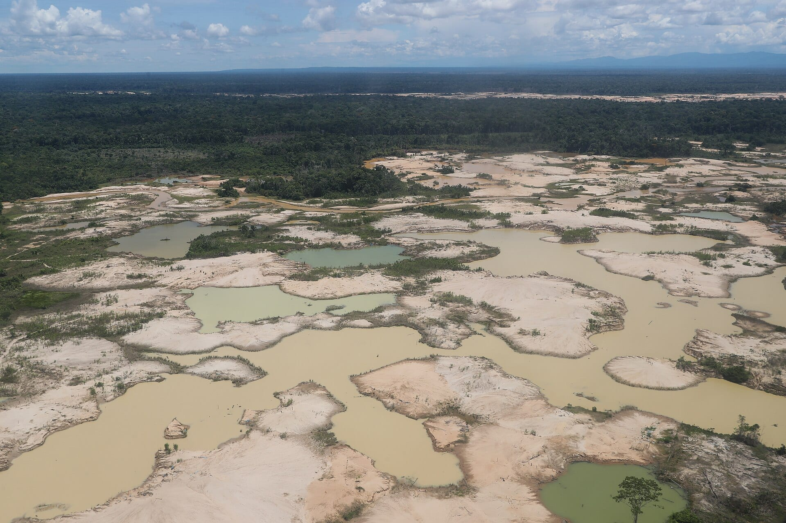
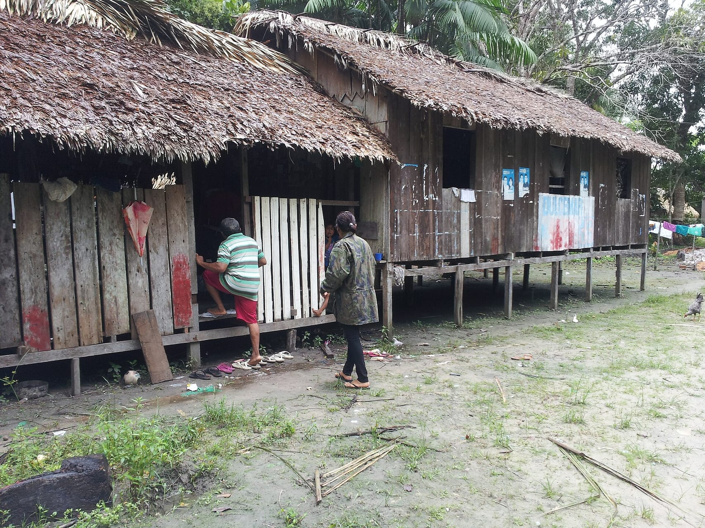

Brazil
Satellite images and drones monitor illegal mining.

Environmental Science
Noah A. Ben H. Myles Z. Gavin F.
The Amazon under pressure


Environmental damage
Mercury enters rivers.
Mining waste harms aquatic life.
Contamination reaches the food chain.

Our proposed solution
Combine satellite and drone monitoring with stronger enforcement.
Wide-area monitoring



Close-up evidence

Real examples from the research
Satellite images and drones monitor illegal mining.
Monitoring helps locate damage and mining activity.
March 2026 geospatial targeting in Valle Dorado.
Monitoring needs support
Police, military, prosecutors, and park rangers work together.
June 2026: authorities destroyed 14 illegal mining camps and seized equipment.
Gates and buildings can protect vulnerable mines.

Strengths
Weaknesses
CostSatellites and drones can be expensive.
DistanceRemote areas remain difficult to monitor.
CloudsCloud cover can limit satellite images.
ResourcesAuthorities still need funding and staff.

Positive impacts
Limitations
Miners may relocate to avoid detection.
Governments may lack response resources.
Enforcement and community cooperation still matter.
Sustainable economic alternatives strengthen the response.
Conclusion
The sooner we act, the better the chance of preserving this ecosystem for future generations.
Research sources
Thank you